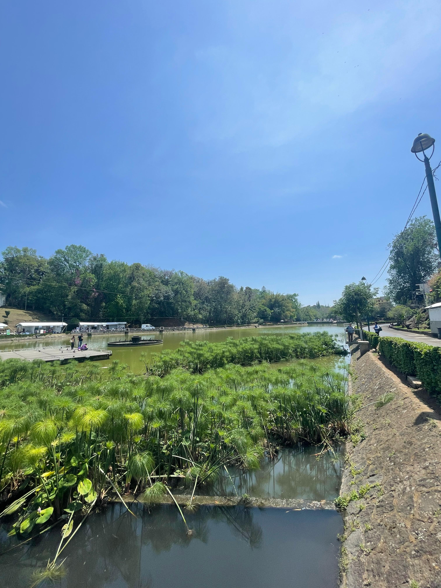
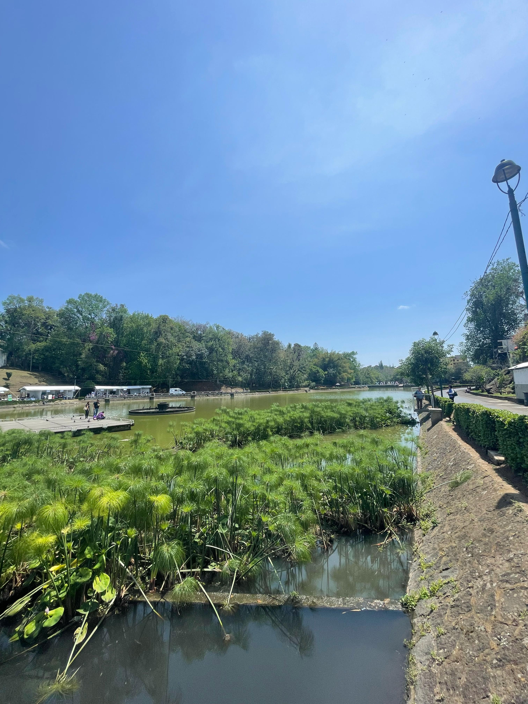

Por un Xalapa más verde!
Tú puedes hacer la diferencia, una conciencia a la vez.
Tú puedes hacer la diferencia, una conciencia a la vez.


 

Bienvenidos a los hermosos Lagos de Xalapa, un rincón lleno de historia, naturaleza y tranquilidad en el corazón de la capital veracruzana. Este encantador espacio, también conocido como Lagos del Dique, es un destino ideal para quienes buscan relajarse en un ambiente natural mientras disfrutan de un recorrido entre árboles, senderos y cuerpos de agua que han formado parte de la historia de la ciudad.
A medida que avanzamos por el sendero, nos encontramos con una rica variedad de flora que adorna el paisaje. Entre los árboles más representativos destacan el sauce llorón (Salix babylonica), con sus elegantes ramas colgantes, y el liquidámbar (Liquidambar styraciflua), que en otoño tiñe el paisaje de tonos rojizos y dorados. También es posible admirar especies como el fresno (Fraxinus uhdei), los encinos (Quercus sp.) y el guayabo, que aportan frescura y sombra a los visitantes.
A la orilla del agua, crecen diversas plantas acuáticas como el lirio acuático (Eichhornia crassipes) y el tule (Typha sp.), que ayudan a purificar el agua y brindan refugio a varias especies. No podemos olvidar la belleza de las bugambilias, las hortensias y otras plantas ornamentales que llenan el paisaje de color y vida.
Mientras seguimos nuestro recorrido, es común encontrarnos con diversas especies de aves que habitan en los lagos. Podemos observar garzas descansando sobre el agua, patos nadando en grupos, así como gorriones, zanates y palomas revoloteando entre los árboles. Algunas de estas aves son residentes, mientras que otras nos visitan en ciertas temporadas del año.
En las tranquilas aguas de los lagos, es posible divisar peces como carpas y tilapias, que se han adaptado a este entorno con el tiempo. Si prestamos atención, podemos notar la presencia de ranas y sapos, que con su característico croar nos recuerdan la riqueza natural del lugar. También habitan tortugas de agua dulce, asoleándose en las piedras y troncos flotantes.
Entre los árboles, es común ver ardillas juguetonas saltando de rama en rama, mientras que los tlacuaches aparecen al atardecer en busca de alimento. Al caer la noche, los discretos murciélagos emergen para cumplir su importante labor en el ecosistema.
Los Lagos de Xalapa son mucho más que un sitio de recreación; son un espacio donde la historia, la naturaleza y la comunidad convergen. Ya sea para una caminata relajante, una sesión de fotografía o simplemente para disfrutar de la tranquilidad del entorno, este parque es una joya dentro de la ciudad.
La próxima vez que busques un escape natural sin salir de Xalapa, no dudes en visitar este hermoso lugar. ¡Disfruta del aire puro, de la flora y fauna, y déjate sorprender por la belleza de los Lagos de Xalapa!
Checa algunas áreas verdes que te pueden interesar